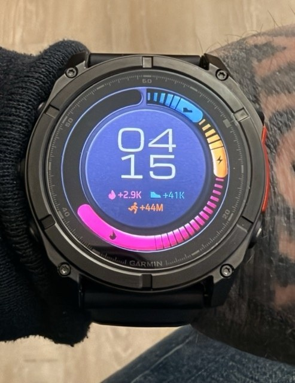
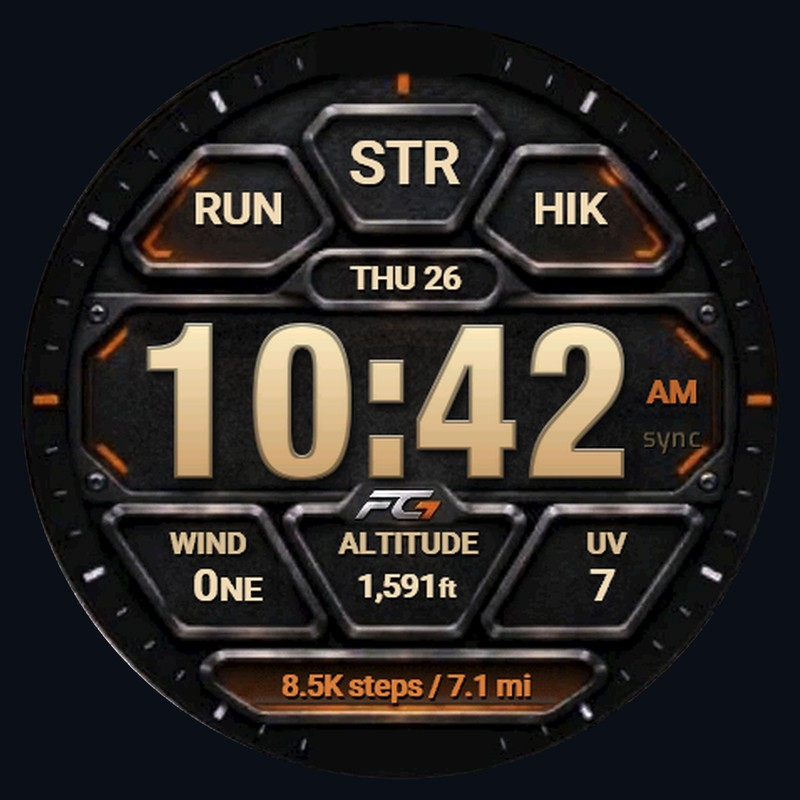
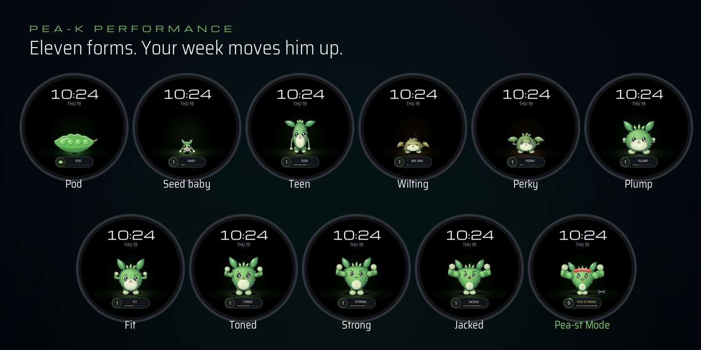

There must be a better way. So we built it.
FaceGrabs makes elevated experiences with your Garmin.

 Your metrics, your call
Your metrics, your call Your best against theirs
Your best against theirs1 · Steady, free
Your journey isn't a straight line
A daily ring starts over at midnight. Training is written in weeks. Steady is one ring scored across today and the six days before it.
Each night the oldest day rolls off and a new one comes in. A rest day is part of the week.
2 · Output, free
Your metrics, your call
Steady shows how much you did. Output asks how ready you are, and lets you decide what that means.
Pick five metrics out of eight and weigh each one low, normal or high. The face turns them into one score and names the one pulling it down most.
3 · DC3, $4.99
You decide what every spot does
A data face that is yours: choose what each spot shows, then look into it.
Hold a metric to open a full page with a graph and the numbers behind it.
Coming in an update: a face rewired by the hour, with its own fields for morning, day, evening and night, a dark hex look, activity preset buttons and web control. Nightly AI analysis is also in development.

4 · Pea-k, free
Your best against theirs
A little green pea grows with your week of movement. Then you take him up against your friends.
In a Duel, each person is measured against their own best. Go one on one or in a group of 3 to 8, for 3, 7, 14 or 28 days.

How we build
Some ideas didn't want to work
They got built anyway.
A watch face on many models gets about 128 KB of memory. On one of those, Pea-k was already using all but about 10 KB, and one addition of roughly 3.4 KB was enough to run it out of room until the artwork was cut into smaller pieces.
Every build starts with four questions. What has never been done? What is missing for the Garmin community? How do the watch's limits become an advantage? Is it helpful, motivating, easy and fun?
Beta Lab
Demand more
"We demand more of our products, and the Garmin community should join us. Reject AI slop. Support apps that actually raise the bar."Justin Foreman, FaceGrabs
The Beta Lab has 100 founding spots, by application. Try new faces early, help decide where designs go and talk directly with the people building them.